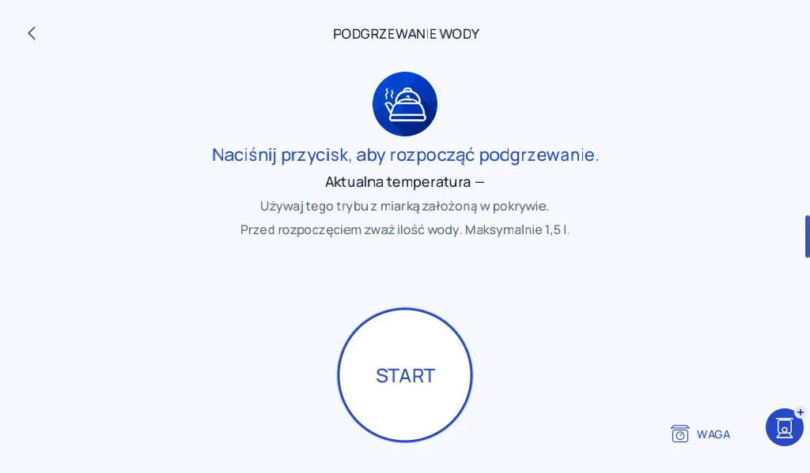

01 / Początki ·
Od czego się zaczęło
Najpierw chciałem, żeby z robota po prostu wygodniej się korzystało.
Zaczęło się od porównywania ekranów i przebiegu przepisów. Rozpisywałem, co się dzieje od wybrania programu do ostatniego kroku: kiedy pokazać wagę, kiedy poprosić o potwierdzenie i gdzie wrócić po wyjściu z programu. Drobiazgi, ale właśnie one decydują o tym, czy w kuchni trzeba się zastanawiać nad obsługą.

W kolejnych wersjach doszły prowadzenie przez przepis, wyszukiwanie w katalogu i narzędzia dostępne w trakcie pracy. Z wersji 0.14 dobrze widać zmianę podejścia. Podgrzewanie wody dostało osobny ekran z prostą instrukcją i skrótem do wagi. Wcześniej korzystało z ogólnego panelu nastaw.
Największe pytanie zostało na koniec: czy da się przenieść to na starszego Connecta i wciąż mieć pod ręką fabryczne Monsieur Cuisine?
Komentarze
Komentarze są dostępne na GitHubie.
Otwórz wątek i skomentuj